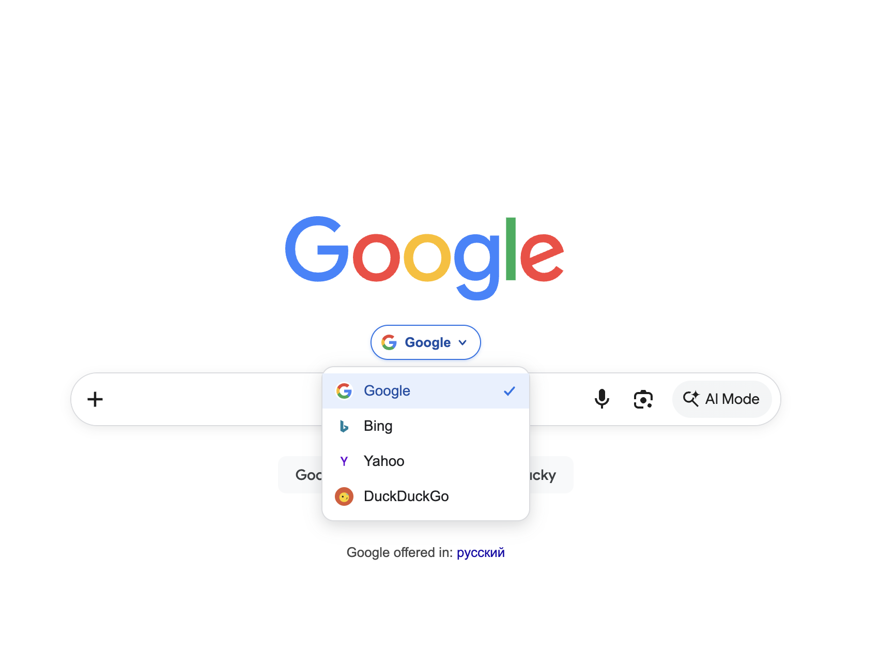
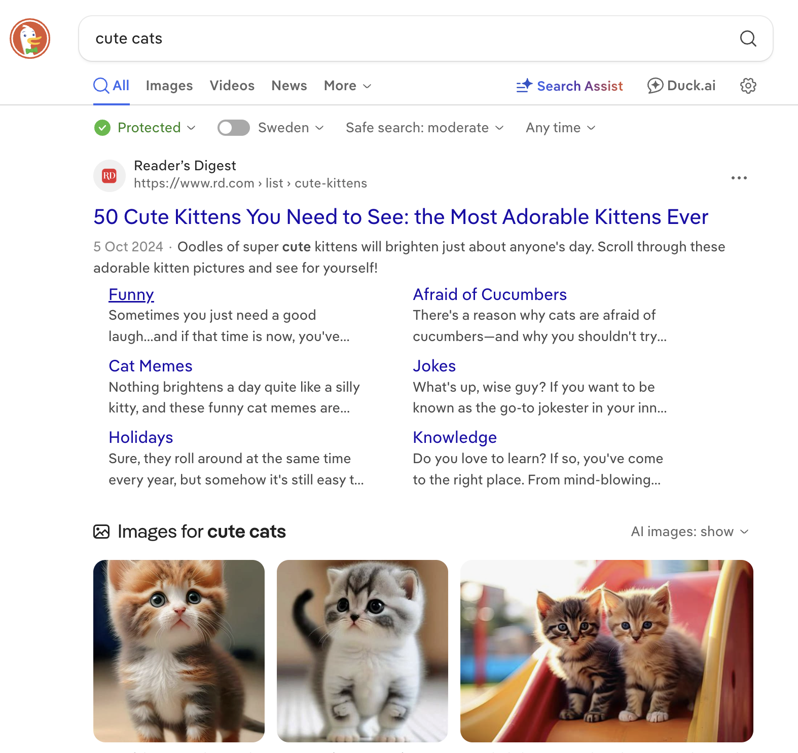
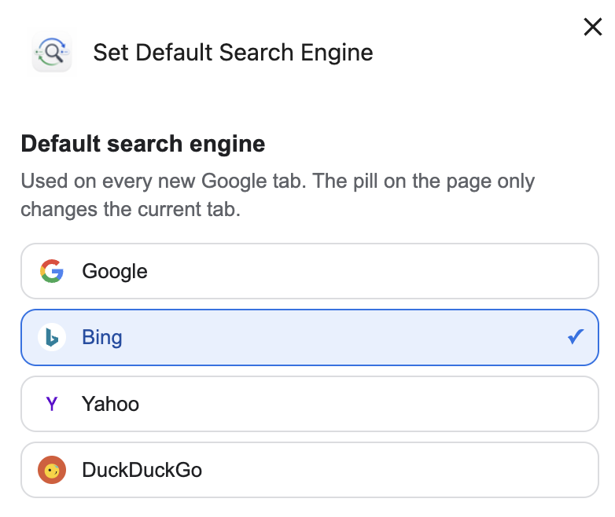

Choose on the page
Open Google and use the pill above the search box. The menu lists Google, Bing, Yahoo, and DuckDuckGo.
A small pill on the Google homepage switches Google, Bing, Yahoo, or DuckDuckGo. Your search goes straight to that engine — nothing is proxied through us.
Open Google and use the pill above the search box. The menu lists Google, Bing, Yahoo, and DuckDuckGo.
The pill changes only the current tab. The default for every new Google tab is set in extension Options.
Queries go to the engine you picked. Set Default Search Engine does not sit in the middle, log searches, or change Chrome’s default search provider.
New Tab opens google.com so the pill is there when you start a search. If Chrome’s own default engine is not Google, the address bar may still use that engine.


